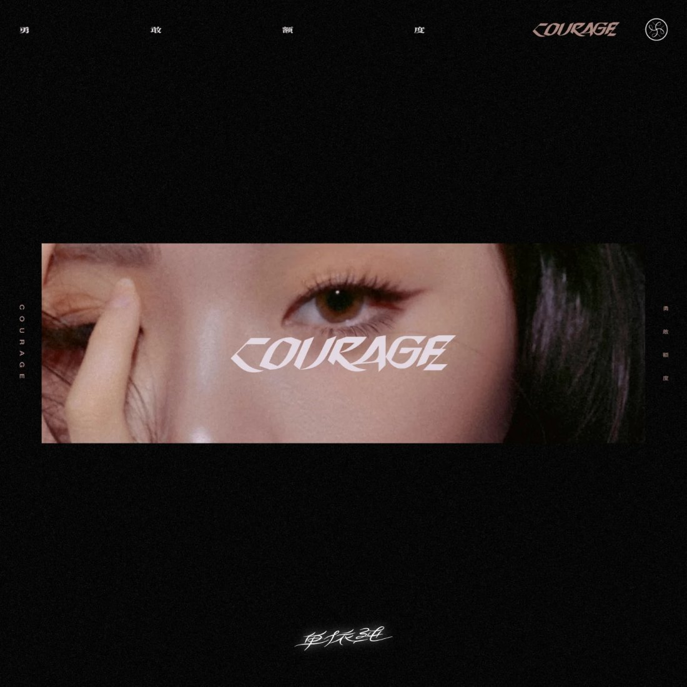

ALBUM 01
勇敢额度
- 空耳
- 另一种答案
- 勇敢额度
- Gray Turns To May
- 你好快乐
- 雨后日记
- 失焦
- Forever In You
- 匿名星
- Tell Me

※ 曲目以专辑正式发行版本为准。每首后面的「试听」打开的是 QQ音乐 的搜索结果页，本页不存放任何音频文件。
| 年份 | 作品 | 出处 |
|---|---|---|
| 2020 | 给电影人的情书 | 张艺谋电影《一秒钟》推广曲 |
| 2021 | 萤火虫 | 电影《误杀 2》片尾曲 |
| 2022 | 星汉灿烂（与阿云嘎） | 电视剧《星汉灿烂·月升沧海》主题曲 |
| 2023 | 让我随风 | 电视剧《三体》插曲 |
| 2023 | 你是倒映的微星 | 电视剧《春闺梦里人》季曼命运主题曲 |
| 2023 | 你的世界 | 迪士尼真人电影《小美人鱼》中文主题曲 |
| 2023 | 红蜻蜓 | 电影《人生路不熟》特别歌谣 |
| 2023 | 想你时风起 | 电视剧《我的人间烟火》回忆主题曲 · 第 31 届东方风云榜"十大金曲" |
| 2023 | 余味 | 网络剧《七时吉祥》沧海缠绵曲 |
| 2023 | 羽化 | 网络剧《虎鹤妖师录》插曲 |
| 2023 | 非诚勿扰 | 电影《非诚勿扰 3》同名主题曲 |
| 2023 | 再见往事 | 电影《怒潮》片尾曲 |
| 2023 | 藏在你的名字里 | 电影《一闪一闪亮星星》主题曲 |
| 2024 | 爱里 | 电视剧《我们的翻译官》爱情主题曲 |
| 2024 | 一生一念 | 电视剧《祈今朝》主题曲 |
| 2024 | 未完待续（与刘宇宁） | 游戏《王者荣耀》520 心动手记皮肤主题曲 |
| 2025 | 无忧·念（与杨宗纬） | 电视剧《无忧渡》片尾曲 |
| 2025 | 月上歌 | 电视剧《藏海传》插曲，被称为"空灵骊歌" |
| 2025 | 像烟火爱过 | 电视剧《许我耀眼》主题曲 |
| 2025 | 七彩光 | 电影《日掛中天》主题曲 |
※ 以上均为她为影视剧、电影或游戏演唱的原声作品，个人专辑收录曲目见上方两张专辑；曲目与剧名依据公开发行信息及片方官宣整理。
原唱周兴哲。她的初舞台曲目，一曲加入李健战队。这首歌此后一直是她被搜索最多的名字，也是出道代表作。
分别原唱薛之谦、艾怡良，同一季节目的两次舞台。前者让她进入战队五强，后者在第六期晋级时演唱。
与周笔畅搭档，分别唱于第三期与第六期。节奏更紧的流行编曲，气声压得很低。
该季以粤语经典金曲为主，她分别唱于第一期与第二期，《来生缘》与刘惜君合唱。
一档重唱影视剧歌曲的音乐综艺，她的三个现场分别出自第七、第八与第十期，其中《我要你》与毛不易合作。
第十二期的合唱曲目，也是她流传度最高的一次现场合作。
第五期的合作舞台，一沙哑一清亮的两组声线被放在同一首歌里。
第三、第五期的两首现场曲目。也是在这一季，她凭《珠玉》拿下过周冠军。
原唱范晓萱。她把这首原本的甜歌改成电子摇滚，先在自己的巡回演唱会上唱，2026 年 6 月又搬上央视《国乐无双》的舞台；改编方式在网络上引发了大量讨论。
最被熟悉的一面。《永不失联的爱》《想你时风起》都属于这一路，几乎没有炫技，靠语气和气息推进情绪。
《勇敢额度》里的都市感，转音和节奏处理更松弛，也是她最容易被忽略的一面。
越剧底子带来的咬字与韵味。《月上歌》《还你茉莉》里都能听到那种婉转的行腔。
《珠玉》的突破尝试，把民族元素和当代编曲放在一起，也是她在《歌手2025》拿下周冠军的那首。
谁去明天遇见我啊，别让今天叫住我了。—— 《珠玉》歌词，李聪词、鱼椒盐曲，2025 年 5 月发行